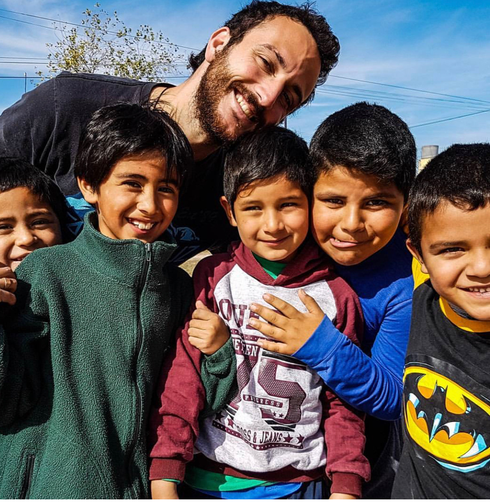

Hola! Me llamo Tomás y soy de Victoria, de Buenos Aires, Argentina.
La fotografíay no estuvo en mi vida desde el minuto cero, la realidad que es la descubrí por una eventualidad. Trabajo hace 6 años en un colegio como preceptor y fue justamente ahí donde encontré mi pasión. Un día saliendo del trabajo mi jefa me explica que le encanta sacar fotos, de hecho, tenia una Nikon con la cual disfrutaba mucho capturando momentos. Unos días mas tardes me la ofrece, sin saber si yo sabia algo del tema o no. Vendía su cámara porque lamentablemente tenia problemas óseos en sus muñecas y ya le resultaba muy pesada a lo que dije: ¿por qué no?.
Así fue como hace 5 años estaba frente a una computadora, buscando tutoriales en YouTube para intentar hacer algo con mi hermosísima Nikon D5100.
Una vez que entendí lo que tenia en mis manos, automáticamente dije necesito un curso para explotar al máximo esto y ver que onda. Acá llegué a un curso de fotografía inicial que se dictaba muy cerca de casa. Fue un antes y un después, aprendí lo básico de la fotografía y me resulto apasionante pero lo mas lindo fue poder obtener resultados y compartirlos con los demás. Ahí me empecé a dar cuenta que realmente me gustaba mucho la fotografía.
Paso el tiempo y mi prioridad eran mis estudios (Agronomía en la Universidad de Buenos Aires) asique no le dedicaba el 100% de mi tiempo, pero era mi escape y lo disfrutaba realmente.

Cada vez que tenia un tiempo, y plata, me anotaba en un curso. De lo que sea, me apasionaba (apasiona) anotarme en cursos y aprender de todas las ramas de la fotografía, viajes, producto, gastronomía, deporte, fotoperiodismo, etc.
Después de cierta cantidad de cursos y estar relativamente conforme con mis fotos, me ofrecí para cubrir ciertos eventos. Al principio de gente conocida y hacerlo por la experiencia. Los resultados fueron mejores de lo que esperaba y empezaron a surgir las clásicas preguntas de porque no te dedicas a esto.
La decisión estaba tomada, quería dedicarme a eso pero antes decidí formarme mejor profesionalmente y a nivel equipos.
Al día de hoy la situación es muy similar a esa, sigo formándome todo lo que puedo (limitado por tiempo y dinero) y trato de tener el mejor equipo que este a mi alcance para poder trabajar de la manera mas profesional posible.
Me fascina la fotografía en si, todo lo que implica. Desde el arte, emociones y mensajes hasta cada tecnicismo que hay.
Hoy por hoy me considero fotógrafo profesional y videografo amateur (por ahora). Si me preguntan digo que me especializo en viajes y social pero actualmente, en el contexto que atravesamos, estoy profundizando mas en producto, gastronomía e iluminación.
La fotografía no solo la considero un arte, sino un medio para transmitir sentimientos, estados de animo, momentos. Siento que una foto bien lograda puede transmitir muchísimo mas que la reacción clásica de “qué lindo lugar”, se puede contar una historia con una sola foto o al menos introducir al espectador en ella.
Por una casualidad, o causalidad mejor dicho, entré en este increíble mundo. Muchisimas cosas por descubrir, entender, aprender pero aun mas por compartir.